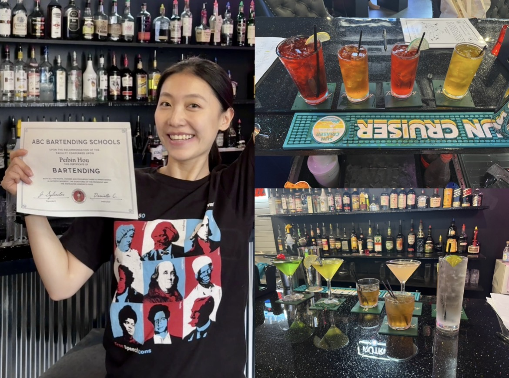
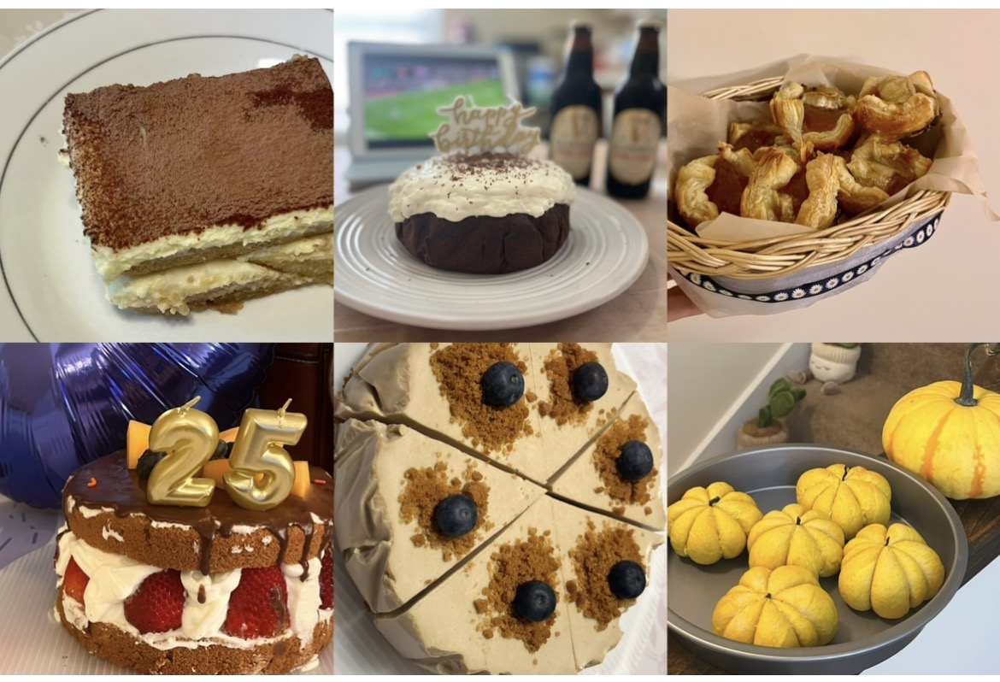

I am a PhD candidate in Applied Economics at the Department of Agricultural Economics and Rural Sociology, Auburn University, advised by Dr. Wenying Li. My research sits at the intersection of household economics, food security, consumer behavior, and causal inference.
What excites me most is finding answers in the data. I work with large-scale administrative datasets, scanner data, and survey experiments, applying quasi-experimental techniques to uncover causal mechanisms behind household welfare, nutrition, and consumer behavior.
As fertility rates drop to another historical low, understanding the economic burden of child-rearing on household income, a main economic reason for falling birth rate, has become more crucial than ever. This study calculates a subjective equivalence scale explaining how much the income of a two-adult, one-child household should increase to maintain the same level of life satisfaction as a two-adult household, using a nationally representative U.S. sample. The results suggest that the equivalence scale for a two-adult, one-child household is 1.18, indicating that raising a child costs 18 % of a two-adult household’s income. Our analysis indicates that programs like the Special Supplemental Nutrition Program for Women, Infants, and Children (WIC) and the National School Lunch Program (NSLP) may be overly generous for households with one child, while the tax deduction policy does not cover child-rearing costs sufficiently.
This paper uses China’s 2016 Pollutant Discharge Permits System (PDPS) to evaluate its impact on innovation in the food processing industry. We begin by exploring the entry and exit decisions of food processing firms. The findings suggest that stricter environmental enforcement following the PDPS leads to decreased local firm entry but increased neighboring firm entry, indicating that new firms tend to locate in neighboring regions with less stringent regulations. Building upon this pattern, we argue that the PDPS’s positive impact on firm innovation is primarily driven by increased industry agglomeration – a dynamic directly stimulated by heterogeneous regulatory pressures.
The U.S. agricultural trade deficit has increased in the past two years, echoing trade patterns between the U.S. and China. This report focuses on U.S. agricultural trade with China, a main trade partner in the 1st quarter of 2024, despite total import and export volume between China and the U.S. falling by 32.8% compared to the same period in 2023. On the import side, tobacco and vegetables increased, while seafood products and fruits decreased. On the export side, soybean, corn, and meat products significantly declined, while wheat and cotton increased. Additionally, this report highlights the U.S.’s immense potential advantage in alfalfa trade with China. Changes in China’s dietary structure, especially the growing demand for dairy products, may turn alfalfa trade into a new highlight.
Socioeconomic-related health inequality remains a crucial topic in health eco- nomics, where the Concentration Index (CI) is commonly used to quantify dispari- ties. However, applying CI is challenging due to the common categorization of income data in survey datasets. Building on the KWD framework proposed by Kakwani et al. (1997) and extended by Chen & Roy (2009), this study develops a novel ma- chine learning-based Concentration Index (ML-CI) to improve inequality estimation under categorical income data. Both the simulation and empirical results show that ML-CI recovers the true level of inequality more accurately and more consistently, and its performance remains stable across a range of sensitivity analyses and alter- native simulation settings. We apply this method to the USDA’s Purchase to Plate Crosswalk (PPC), which links Circana (formerly IRI) household scanner data with the USDA Food and Nutrient Database for Dietary Studies (FNDDS). This allows us to compute both purchased kilocalories per adult-equivalent household member and Healthy Eating Index (HEI) scores for each household, making this one of the first studies to directly quantify dietary inequality in the U.S. Our findings reveal a pro- rich gradient in HEI scores in the U.S., indicating healthier diets among wealthier groups, while kcal/capita exhibits a pro-poor distribution, reflecting higher calorie consumption but less nutritious diets among lower-income groups.
Efficient phosphorus (P) management is essential for balancing agricultural productivity and environmental outcomes. Using high-resolution experimental data and Bayesian Hierarchical Model, this study examines how soil heterogeneity shapes yield responses to a fixed P application. Results show strong context dependence: the heterogeneity is in magnitude rather than in sign, as 94% of subplots have a positive expected response, yet only 39% respond by enough to cover the cost of an application. Responses decline with a subplot’s own soil test P, increase with buffering capacity, and decrease with P availability in neighboring subplots. Economic and environmental simulations indicate that site-specific P management raises net returns by $10.20 per acre relative to the current recommendation, while reducing P inputs by 53.5%. These reductions generate substantial environmental benefits, with avoided external damage costs approaching $17 million annually in Kentucky.
This study investigates the trade implications of agricultural Voluntary Sustainability Standards (VSSs), with a novel distinction between Quality-Enhancement (QE) and Labor Welfare (LW) certifications. While VSSs are increasingly adopted to address sustainability concerns in agriculture, their trade effects remain ambiguous. We develop a theoretical gravity model grounded in Melitz (2002) to explore how product quality improvements and labor welfare gains influence trade, and test these mechanisms empirically. Decomposing trade into intensive and extensive margins, we find that QE-VSSs significantly boost both trade volume and new trade relationships in the short term, with effects tapering after four years. LW-VSSs, in contrast, show delayed benefits: while their early impact on trade is statistically indistinguishable from zero, they enhance trade volume in the longer run. Heterogeneity analyses reveal that developing exporters trading with developed importers benefit most from both types of standards, especially under non-mandatory frameworks. We also find that VSS adoption is associated with a reduction in income disparity, suggesting that sustainability standards may support more inclusive global trade. Our findings highlight the differentiated trade mechanisms of QE- and LW-VSSs and underscore the need for tailored policy support to balance sustainability objectives with trade competitiveness.
The effects of public food safety disclosures on consumer online purchasing behavior remain insufficiently understood. In 2025, Consumer Reports identified heavy metal contamination in selected infant formula products, raising widespread safety concerns; among leading brands, certain Similac products were labeled as “Worse Choices,” whereas its primary competitor, Enfamil, received more favorable ratings. This study examines how such disclosures affect online sales and pricing dynamics. Hourly price and sales rank data were collected from Amazon via Keepa from January 2024 to February 2026, and a regression discontinuity in time (RDiT) design was applied to estimate causal effects. The results indicate no significant short-term price responses for either Similac or Enfamil following the disclosure. However, sales rank improved for unflagged Similac products (τ = −0.892; 95% CI: −1.109, −0.675; p < 0.001), suggesting increased demand, while flagged Similac products experienced a deterioration in sales rank; Enfamil exhibited no statistically significant change. Overall, the findings suggest that consumers respond to product-specific safety disclosures by reallocating purchases within a trusted brand toward safer options rather than switching across brands or reacting through price adjustments, highlighting the importance of targeted safety information in shaping consumer choice in online markets.
Full Curriculum Vitae
Includes education, publications, working papers, conference presentations, teaching experience, technical skills, and awards. Last updated March 2026.
and Rural Sociology
Auburn University
When I’m not doing research, you’ll often find me dancing, experimenting with cocktails and desserts, or exploring somewhere new. Here are a few highlights from my life beyond academia.


Alabama
A quiet trip home, with long afternoons, good food, and the kind of place that always feels familiar.